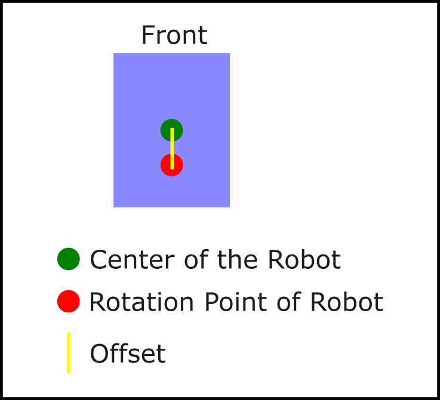
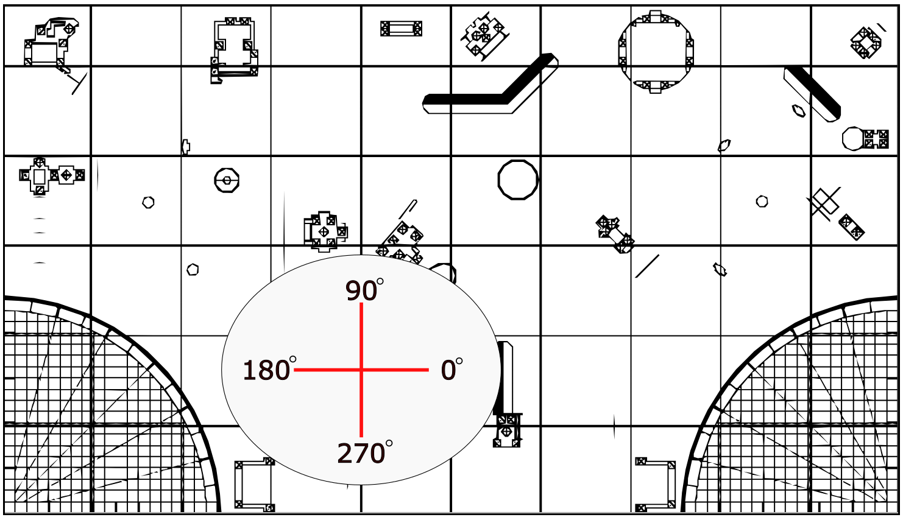

Start in the Mission Tool and define the mission name, start position, heading, and action list. Use the Robot Builder if you want to model the actual footprint of the chassis and any mission attachments.
When the mission looks right, run it directly on the field map or use replay mode to scrub through the route frame by frame. If you are working with a team, save missions and robot profiles through the hosted team cloud.
The simulator is meant for planning, not for precise drivetrain prediction. It helps students reason about geometry and sequencing, but it does not model wheel slip, acceleration, backlash, collision physics, or sensor drift.
| Topic | Current behavior |
|---|---|
| Units | Centimeters for distance, degrees for heading |
| Origin | Lower-left corner of the field |
| Heading | 0 degrees points along positive X, positive angles turn counter-clockwise |
| Robot shape | One rectangle plus optional rectangular attachments |
| Turning | In-place turns around a configurable front/back offset |
| Timing | Replay timing is illustrative rather than measured from a real robot |
Keep the mission model simple enough that students can understand why the path changes. If a path only works in the simulator when the start pose is extremely exact, that is usually a sign the real robot will need a more reliable alignment method or a better recovery plan.
Using the hub yaw sensor for turns will generally make the simulated route more meaningful, because the visual plan assumes the robot can hit the commanded heading consistently.
The planner also accepts mission JSON directly. This is useful when you want to share a route, keep versions in source control, or generate paths outside the editor.
{
"name": "Coral Sweep",
"startX": 11.5,
"startY": 0,
"startAngle": 90,
"robotWidthCm": 17,
"robotLengthCm": 15,
"traceColor": "#108368",
"offsetY": 1.8,
"attachments": [
{ "side": "front", "widthCm": 6, "lengthCm": 4, "positionCm": 0 }
],
"actions": [
{ "type": "move", "value": 17 },
{ "type": "rotate", "value": -24 },
{ "type": "move", "value": 50 },
{ "type": "move", "value": -50 },
{ "type": "rotate", "value": 24 },
{ "type": "move", "value": -17 }
]
}These diagrams explain how the turn-center offset and field orientation are interpreted by the planner.

